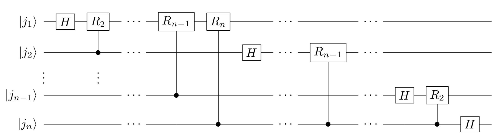

2-3. Quantum Fourier Transform¶
The quantum Fourier transform)*As mentioned somewhat in the last column, it is considered difficult to perform the quantum Fourier transform in so-called NISQ devices because of the circuit complexity and the difficulty of preparing input states.
Definition¶
First, for a \(2^n\)-dimension array \(\{x_j\}\) \((j=0,\cdots,2^n-1)\), its discrete Fourier transform, the array \(\{y_k \}\) \((k=0, \cdots 2^n-1)\), is defined as follows
The array \(\{x_j\}\) is normalized ,and subject to \(\sum_{j=0}^{2^n-1} |x_j|^2 = 1\).
The quantum Fourier transform algorithm transforms input quantum state
to the following state.
\(|i \rangle\) is an abbreviation for the quantum state \(|i_1 \cdots i_n \rangle\) corresponding to the binary representation of the integer \(i\) (\(i_m = 0,1\)). (For example, \(|2 \rangle = |0\cdots0 10 \rangle, |7 \rangle = |0\cdots0111 \rangle\))
Now, substituting equation (1) into (2), we obtain
Therefore, in order to conduct Quantum Fourier Transform, we need to find a quantum circuit(transform) \(U\) which conducts
Here,
is a binary decimal. \(e^{i 2\pi j/2^{-l} } = e^{i 2\pi j_1 \cdots j_l . j_{l-1}\cdots j_n } = e^{i 2\pi 0. j_{l-1}\cdots j_n }\) is used.（\(e^{i2\pi}=1\). Therefore, the integer part is irrelevant.）
In summary, the following transformation must be implemented to conduct the quantum Fourier transform.
Circuit Configuration¶
and the general phase gate with angle \(2\pi/2^l\) repeatedly.
first, make the part of the state \(\left( |0\rangle + e^{i 2\pi 0.j_1j_2\cdots j_n} |1\rangle \right)\). Applying an Hadamard gate on the first qubit \(|j_1\rangle\) and
\[|j_1 \cdots j_n \rangle \to \frac{1}{\sqrt{2}} \left( |0\rangle + e^{i2\pi 0.j_1} |1\rangle \right) |j_2 \cdots j_n \rangle\]If we apply the general phase gate \(R_2\) with the second bit \(|j_2\rangle\) as the control bit to the first qubit, nothing will be done when \(j_2=0\), and only when \(j_2=1\) , the phase \(2\pi/2^2 = 0. 01\) (binary fractional) is added to the \(|1\rangle\) portion of the first qubit have , so
\[ \frac{1}{\sqrt{2}} \left( |0\rangle + e^{i2\pi 0.j_1} |1\rangle \right) |j_2 \cdots j_n \rangle \to \frac{1}{\sqrt{2}} \left( |0\rangle + e^{i2\pi 0.j_1j_2} |1\rangle \right) |j_2 \cdots j_n \rangle\]If we apply the general phase gate \(R_l\) with the \(l\)th qubit \(|j_l\rangle\) as the control bit (\(l=3,\cdots n\)), we end up with
\[\frac{1}{\sqrt{2}} \left( |0\rangle + e^{i2\pi 0.j_1\cdots j_n} |1\rangle \right) |j_2 \cdots j_n \rangle\]Next, create the state \(\left( |0\rangle + e^{i2\pi 0.j_2\cdots j_n} |1\rangle\right)\). As before, if we apply an Hdamard gate to the second bit \(|j_2\rangle\), we get
\[\frac{1}{\sqrt{2}} \left( |0\rangle + e^{i2\pi 0.j_1\cdots j_n}|1\rangle \right) \frac{1}{\sqrt{2}} \left( |0\rangle + e^{i2\pi 0.j_2} |1\rangle \right) |j_3 \cdots j_n \rangle\]Again, if we apply a phase gate \(R_2\) with the third qubit as the control bit \(|j_3\rangle\), we get
\[\frac{1}{\sqrt{2}} \left( |0\rangle + e^{i2\pi 0.j_1\cdots j_n}|1\rangle \right) \frac{1}{\sqrt{2}} \left( |0\rangle + e^{i2\pi 0.j_2j_3}|1\rangle \right) |j_3 \cdots j_n \rangle\]and by doing this repeadedly, we get
\[\frac{1}{\sqrt{2}} \left( |0\rangle + e^{i2\pi 0.j_1\cdots j_n}|1\rangle \right) \frac{1}{\sqrt{2}} \left( |0\rangle + e^{i2\pi 0.j_2\cdots j_n}|1\rangle \right) |j_3 \cdots j_n \rangle\]In the same procedure as in 1 and 2, applying the Hdamard gate/control phase gate \(R_l, R_{l+1},\cdots\) (\(l=3,\cdots,n\)) to the \(l\)th qubit \(|j_l\rangle\) , we get the final result
\[|j_1 \cdots j_n \rangle \to \left( \frac{|0\rangle + e^{i 2\pi 0.j_1\cdots j_n} |1 \rangle}{\sqrt{2}} \right) \otimes \left( \frac{|0\rangle + e^{i 2\pi 0.j_2\cdots j_n} |1 \rangle}{\sqrt{2}} \right) \otimes \cdots \otimes \left( \frac{|0\rangle + e^{i 2\pi 0.j_n} |1 \rangle}{\sqrt{2}} \right)\]Finally, by inverting the order of the bits with the SWAP gate, we have constructed a circuit that performs the quantum Fourier transform (note that the order of the bits is reversed from equation (\(*\))).The circuit diagram without the SWAP part is as follows.
Implementation using SymPy¶
To deepen our understanding of the quantum Fourier transform, let’s implement the circuit for \(n=3\) using SymPy.
[5]:
from sympy import *
from sympy.physics.quantum import *
from sympy.physics.quantum.qubit import Qubit,QubitBra
init_printing() # to show vectors and matrices nicely
from sympy.physics.quantum.gate import X,Y,Z,H,S,T,CNOT,SWAP,CPHASE,CGateS
First, the input to Fourier transform, \(|x\rangle\), is
the superposition state of all states (\(x_0 = \cdots = x_7 = 1/\sqrt{8}\)).
[6]:
input = 1/sqrt(8) *( Qubit("000")+Qubit("001")+Qubit("010")+Qubit("011")+Qubit("100")+Qubit("101")+Qubit("110")+Qubit("111"))
input
[6]:
Fourier transform of the array corresponding to this state with numpy yields
[7]:
import numpy as np
input_np_array = 1/np.sqrt(8)*np.ones(8)
print( input_np_array ) ## input
print( np.fft.ifft(input_np_array) * np.sqrt(8) )
#To match the definition of Fourier transform with the definition of ifft in numpy, multiply by sqrt(2^3)
[0.35355339 0.35355339 0.35355339 0.35355339 0.35355339 0.35355339
0.35355339 0.35355339]
[1.+0.j 0.+0.j 0.+0.j 0.+0.j 0.+0.j 0.+0.j 0.+0.j 0.+0.j]
and Fourier transform gives us a simple sequence, \(y_0=1,y_1=\cdots=y_7=0\). Let us verify this by quantum Fourier transform.
First, note that \(R_1, R_2, R_3\) gates are equal to \(Z, S, T\) gates, respectively (\(e^{i\pi}=-1, e^{i\pi/2}=i\)).
[8]:
represent(Z(0),nqubits=1), represent(S(0),nqubits=1), represent(T(0),nqubits=1)
[8]:
[9]:
QFT_gate = H(2)
QFT_gate = CGateS(1, S(2)) * QFT_gate
QFT_gate = CGateS(0, T(2)) * QFT_gate
The second (first in SymPy) qubit is also subjected to the Hadamard gate and control \(R_2\) operation.
[10]:
QFT_gate = H(1) * QFT_gate
QFT_gate = CGateS(0, S(1)) * QFT_gate
The third (0th in SymPy) qubit should only have an Hadamard gate applied.
[11]:
QFT_gate = H(0) * QFT_gate
Finally, a SWAP gate is applied to match the order of the bits.
[12]:
QFT_gate = SWAP(0, 2) * QFT_gate
Now we have constructed a circuit for the quantum Fourier transform when \(n=3\). The circuit itself is somewhat complex.
[13]:
QFT_gate
[13]:
When this circuit is acted on the input vector \(|x\rangle\), the following can be seen, showing that the correct Fourier transformed state is output. (\(y_0=1,y_1=\cdots=y_7=0\))
[14]:
simplify( qapply( QFT_gate * input) )
[14]:
You are encouraged to run this circuit with various inputs to verify that the Fourier transform is done correctly.
Column: About Computational Power¶
What does it mean to say that a quantum computer can perform computations at higher speed? Let us consider the quantum Fourier transform studied in this section as an example.
If you want to learn more about what kind of problems quantum computers are considered fast and how they are treated theoretically, please refer to the Qmedia article 「What does it mean that “quantum computers are better than classical computers”(Tomoyuki Takezaki).
Note on the order notation \(\mathcal{O}\).¶
In the first place, how can the performance of an algorithm be quantitatively evaluated? Here, we consider the resources required to run the algorithm, mainly time, as its criterion. In particular, when the problem size is \(n\), let’s consider how the required computational resources, such as the number of computation steps (time) and memory consumption, behave as a function of \(n\). (The size of the problem is, for example, the number of data to be sorted or the number of digits in the binary representation of the number of prime factors to be decomposed.)
For example, suppose that for a problem size \(n\), the computational resources required by the algorithm are given by \(f(n)\).
When \(n\) is sufficiently large (e.g., \(n=10^{10}\)), \(5n\) and \(6\) are sufficiently small compared to \(2n^2\). Therefore, the factor \(5n+8\) is not important in terms of evaluating this algorithm. Also, the information that the factor of \(n^2\) is \(2\) does not affect the behavior when \(n\) is sufficiently large. Thus, the information on the most “strong “ term of the computation time \(f(n)\) can be considered important. This way of thinking is called asymptotic evaluation, and following the order notation of computational quantities, it is expressed by the following equation.
In general, \(f(n) = \mathcal{O}(g(n))\) means that for any \(n > n_0\), given some positive numbers \(n_0, c\),
is valid. In the example above, this definition is true if \(n_0=7, c=3\) (try drawing a graph). As an exercise, consider a pair of \(n_0, c\) that gives the order notation \(f(n) = \mathcal{O}(n^3)\) of \(f(n) = 6n^3 +5n\).
In evaluating the performance of an algorithm, the required computational resources are expressed as a function of \(n\) when the size of its input is \(n\). In particular, asymptotic evaluation using the order notation is useful for understanding the behavior of an algorithm when the size of its inputs increases. Using computational quantity theory based on such asymptotic evaluation, various algorithms have been classified. For details, please refer to the above Qmedia article.
[ ]: